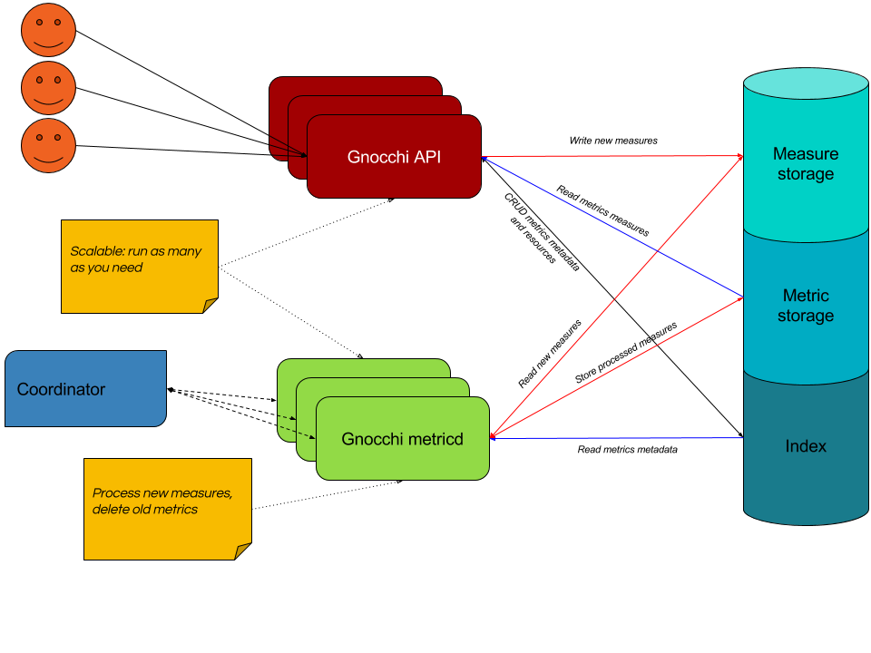

Project Architecture¶
Gnocchi consists of several services: a HTTP REST API (see REST API Usage), an optional statsd-compatible daemon (see Statsd Daemon Usage), and an asynchronous processing daemon (named gnocchi-metricd). Data is received via the HTTP REST API or statsd daemon. gnocchi-metricd performs operations (statistics computing, metric cleanup, etc...) on the received data in the background.
Both the HTTP REST API and the asynchronous processing daemon are stateless and are scalable. Additional workers can be added depending on load.
{kind=link}
Back-ends¶
Gnocchi uses three different back-ends for storing data: one for storing new incoming measures (the incoming driver), one for storing the time series (the storage driver) and one for indexing the data (the index driver).
The incoming storage is responsible for storing new measures sent to metrics. It is by default – and usually – the same driver as the storage one.
The storage is responsible for storing measures of created metrics. It receives timestamps and values, and pre-computes aggregations according to the defined archive policies.
The indexer is responsible for storing the index of all resources, archive policies and metrics, along with their definitions, types and properties. The indexer is also responsible for linking resources with metrics.
Available storage back-ends¶
Gnocchi currently offers different storage drivers:
- File (default)
- Ceph (preferred)
- OpenStack Swift
- S3
The drivers are based on an intermediate library, named Carbonara, which handles the time series manipulation, since none of these storage technologies handle time series natively.
The four Carbonara based drivers are working well and are as scalable as their back-end technology permits. Ceph and Swift are inherently more scalable than the file driver.
Depending on the size of your architecture, using the file driver and storing your data on a disk might be enough. If you need to scale the number of server with the file driver, you can export and share the data via NFS among all Gnocchi processes. In any case, it is obvious that S3, Ceph and Swift drivers are largely more scalable. Ceph also offers better consistency, and hence is the recommended driver.
Available index back-ends¶
Gnocchi currently offers different index drivers:
- PostgreSQL (preferred)
- MySQL (at least version 5.6.4)
Those drivers offer almost the same performance and features, though PostgreSQL tends to be more performant and has some additional features (e.g. resource duration computing).
How to plan for Gnocchi’s storage¶
Gnocchi uses a custom file format based on its library Carbonara. In Gnocchi, a time series is a collection of points, where a point is a given measure, or sample, in the lifespan of a time series. The storage format is compressed using various techniques, therefore the computing of a time series’ size can be estimated based on its worst case scenario with the following formula:
number of points × 8 bytes = size in bytes
The number of points you want to keep is usually determined by the following formula:
number of points = timespan ÷ granularity
For example, if you want to keep a year of data with a one minute resolution:
number of points = (365 days × 24 hours × 60 minutes) ÷ 1 minute
number of points = 525 600
Then:
size in bytes = 525 600 bytes × 6 = 3 159 600 bytes = 3 085 KiB
This is just for a single aggregated time series. If your archive policy uses the 6 default aggregation methods (mean, min, max, sum, std, count) with the same “one year, one minute aggregations” resolution, the space used will go up to a maximum of 6 × 4.1 MiB = 24.6 MiB.